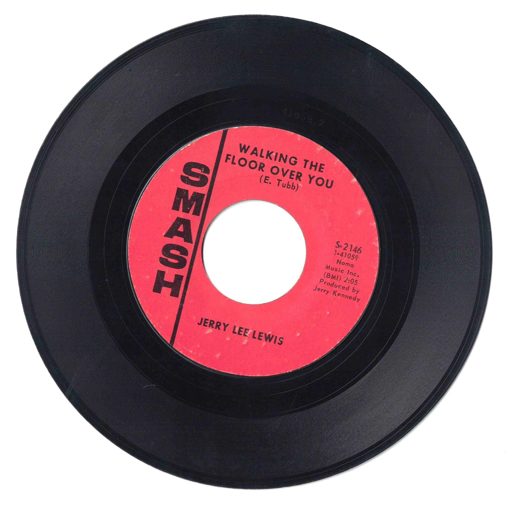

Product No. HEC-0109
$4.95
Shipping: $8.95
Description
45 RPM, 7-inch single
Full Description
Jerry Lee Lewis (Deceased) was an American singer, songwriter, and pianist who became one of the most electrifying figures of early rock and roll. Born in Ferriday, Louisiana, in 1935, he developed a flamboyant piano style that blended country, gospel, rhythm and blues, and boogie-woogie. Lewis rose to fame in the late 1950s with Sun Records, the legendary Memphis label that also launched Elvis Presley, Johnny Cash, and Carl Perkins. His breakthrough hits included "Whole Lotta Shakin' Goin' On" and "Great Balls of Fire," both of which became rock and roll classics. His energetic performances, pounding piano playing, and rebellious stage presence earned him the nickname "The Killer." Although controversy temporarily damaged his career in the late 1950s, Lewis later reinvented himself as a successful country music performer. During the late 1960s and 1970s, he recorded numerous country hits, including "Another Place, Another Time," "What Made Milwaukee Famous," and "She Even Woke Me Up to Say Goodbye." Lewis was inducted into the Rock and Roll Hall of Fame in 1986 and later into the Country Music Hall of Fame. He remained an influential and widely recognized performer for decades. Jerry Lee Lewis died in 2022 at age 87, leaving behind a legacy as one of the most important and dynamic pioneers of rock and roll.
Condition
Good condition